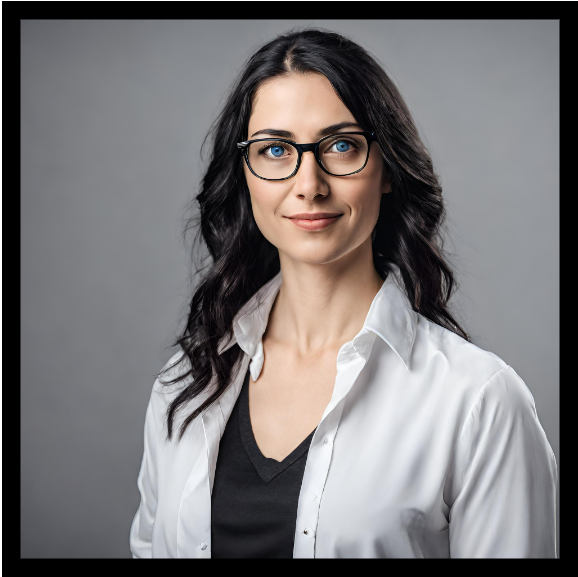

Hoş Geldiniz!
Merhaba! Ben Zeynep Yılmaz. Web tasarımı ve geliştirme konularında tutkulu biriyim. 2016 yılından beri sektörde çalışıyorum ve her geçen gün daha fazla deneyim kazanıyorum. İşimi severek yapıyor, her projeye özenle yaklaşıyor ve müşterilerimin beklentilerini karşılamak için çaba sarf ediyorum.
Profesyonel kariyerime ABC Yazılım'da yazılım geliştirme uzmanı olarak başladım. Daha sonra XYZ Tasarım Ajansı'nda web tasarımcısı olarak çalıştım ve son olarak DEF Şirketi'nde grafik tasarımcı olarak görev aldım. Bu süreç boyunca HTML, CSS, JavaScript, ve Python gibi birçok teknolojiyi öğrenme ve geliştirme fırsatı buldum.
Siz de benimle iletişime geçerek projelerinizde birlikte çalışabilir ve hayallerinizdeki web sitesini gerçeğe dönüştürebiliriz. Benimle çalışmanın size profesyonel ve kaliteli bir hizmet sunacağından emin olabilirsiniz.
İş Tecrübeleri
- ABC Yazılım - Yazılım Geliştirme Uzmanı (2020-2023)
- XYZ Tasarım Ajansı - Web Tasarımcısı (2018-2020)
- DEF Şirketi - Grafik Tasarımcı (2016-2018)
Teknik Beceriler
- HTML
- CSS
- JavaScript
- Python
- React.js
- UI/UX Tasarımı
Projeler
Güzellik Salonu Projesi

Restoran Projesi
Referanslar
- "Zeynep, projemizi zamanında ve istediğimiz şekilde tamamladı. Çok profesyonel bir çalışma ortaya koydu." - Ahmet Tekin
- "Zeynep, işimizi titizlikle yürüttü ve sonuçta beklediğimizden daha iyi bir iş çıkardı. Kendisiyle çalışmak çok keyifliydi." - Ayşe Kara